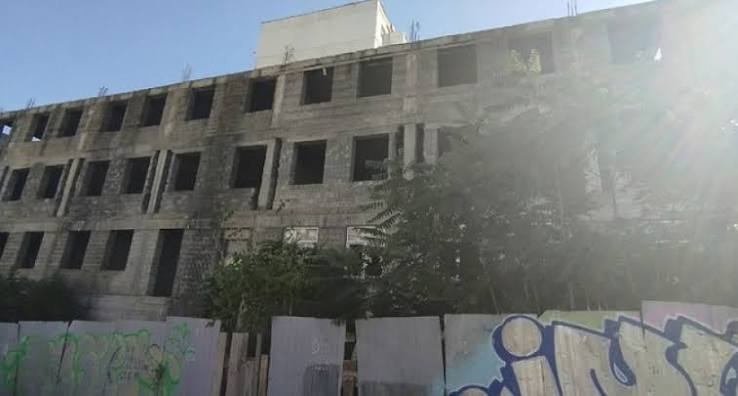

Полуразрушенное заброшенное здание возвышается рядом с площадью Героев на улице Губернского, 6. Там выбиты почти все стёкла, уже отсутствуют куски стен. Несколько раз здесь случались немаленькие пожары.

Одна из самых внушительных заброшек Новороссийска находится на улице Тобольской рядом с пенсионным фондом. В 2008 году началось строительство многоэтажки, квартиры которой предназначались для семей военнослужащих. Не хватило финансирования. А в 2012 году закончился и срок аренды земельного участка под домом. Теперь объект надо сносить. Но сделать это в плотно заселённом микрорайоне крайне тяжело.

Еще одна «заброшка», куда солиднее – высотой в четыре этажа, находится на пересечении Видова и Щорса. Местные жители часто жаловались на сборища бомжей, крики и пьяные драки в недостроенном здании. Сейчас оно окружено забором из металлопрофиля, но выглядит ограждение совсем ненадежно. При малейшем дуновении ветерка лист издает зловещий скрип, от которого по коже бегут мурашки.
В 2008 году здесь началось строительство 9-этажного дома. Но работы остановились. Когда начиналось строительство, у будущей многоэтажки было два собственника: один арендовал земельный участок, второй вкладывал средства в стройку. Но в ходе возведения дома возникли проблемы с документацией, затянулись сроки. В конечном итоге у первого закончился срок аренды земли, а второй перестал финансировать.